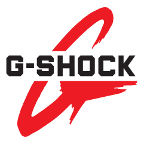
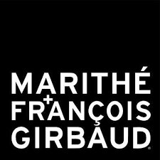
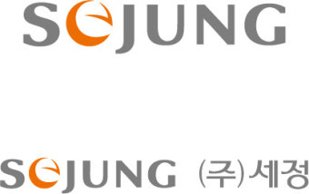
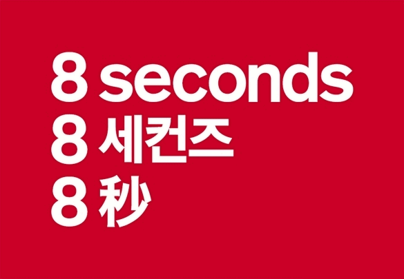
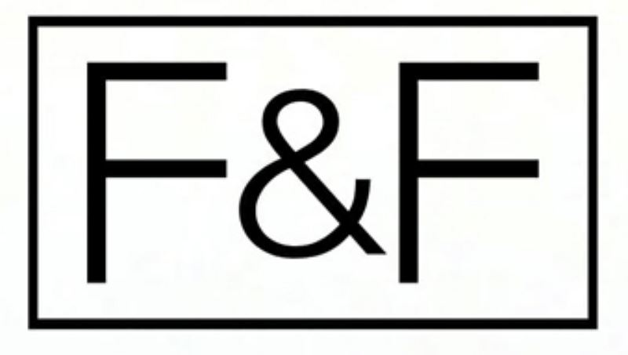
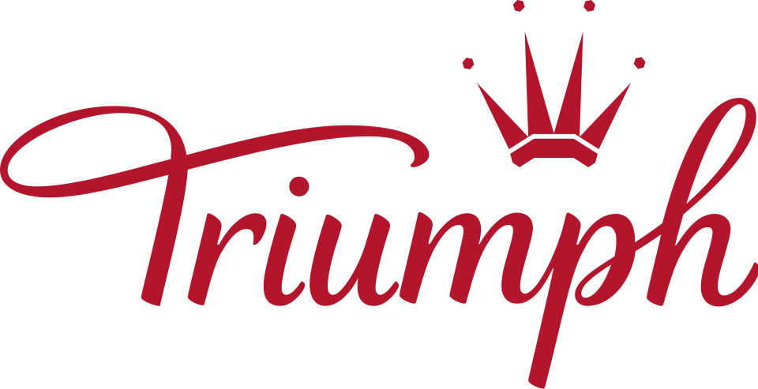
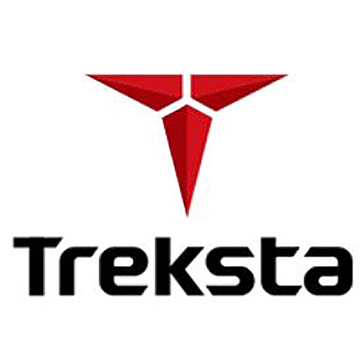
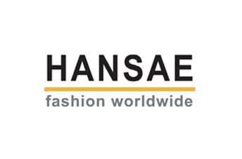

패션·럭셔리 브랜드 106
루이비통, 샤넬, 에르메스처럼 욕망과 정체성을 설계한 브랜드들의 계보를 읽습니다. 브랜드 아틀라스에 수록된 패션·럭셔리 브랜드 106개를 로고와 함께 모았습니다. 각 항목은 설립 배경, 브랜드 아이덴티티, 로고 변천, 제품과 서비스, 현재 상태를 정리한 상세 페이지로 이어집니다.
다른 산업 보기
기원 국가가 확인된 브랜드는 68개이며 한국 15개, 이탈리아 12개, 미국 8개, 프랑스 7개, 스위스 4개 순으로 많습니다. 설립연도가 확인된 브랜드는 63개이며 가장 오래된 곳은 1847년, 가장 최근은 2019년에 시작했습니다. 시기별로는 1900년 이전 10개, 1900~1949년 12개, 1950~1999년 30개, 2000년 이후 11개입니다. 수록 자료로는 로고 이미지 98개, 로고 변천 자료 48개, 연혁 타임라인 76개를 갖췄습니다. 이 가운데 55개는 공식 웹사이트가 일치하는 위키데이터 개체로 연결해 두었습니다.
패션·럭셔리 브랜드 목록
품질 점수 순 상위는 로고 타일로, 나머지는 가나다순 목록으로 보입니다.
 구찌GUCCI이탈리아 · 1921년
구찌GUCCI이탈리아 · 1921년구찌(Gucci)는 이탈리아 피렌체에 본사를 둔 럭셔리 패션 하우스이다.
 조르지오 아르마니GIORGIO ARMANI이탈리아 · 1975년
조르지오 아르마니GIORGIO ARMANI이탈리아 · 1975년조르지오 아르마니(Giorgio Armani)는 1975년 밀라노에서 설립된 이탈리아 럭셔리 패션 하우스이다.
 까르띠에Cartier프랑스 · 1847년
까르띠에Cartier프랑스 · 1847년까르띠에(Cartier)는 1847년 파리에서 설립된 프랑스 럭셔리 주얼리·시계 메종이다.
 버버리BURBERRY영국 · 1856년
버버리BURBERRY영국 · 1856년버버리(Burberry)는 1856년 설립된 영국의 럭셔리 패션 하우스이다.
 어그UGG미국 · 1978년
어그UGG미국 · 1978년UGG(어그)는 미국 데커스 브랜즈 산하의 양가죽 부츠로 유명한 신발 브랜드이다.
 롤렉스ROLEX스위스 · 1905년
롤렉스ROLEX스위스 · 1905년롤렉스(Rolex)는 스위스 제네바에 본사를 둔 럭셔리 시계 제조사이다.
 생 로랑Yves Saint Laurent프랑스 · 1961년
생 로랑Yves Saint Laurent프랑스 · 1961년생 로랑(Yves Saint Laurent)은 1961년 파리에서 설립된 프랑스 럭셔리 패션 하우스이다.
오메가(OMEGA)는 스위스 스와치 그룹 산하의 럭셔리 시계 제조 브랜드이다.
 갭GAP1969년
갭GAP1969년갭(Gap)은 1969년 도널드·도리스 피셔 부부가 설립한 미국 캐주얼 의류 리테일 브랜드이다.
 토리 버치Tory Burch미국 · 2004년
토리 버치Tory Burch미국 · 2004년토리 버치(Tory Burch)는 2004년 디자이너 토리 버치가 설립한 미국 패션 브랜드이다.
비비안 웨스트우드(Vivienne Westwood)는 펑크를 주류 패션으로 끌어올린 영국의 독립 럭셔리 패션 브랜드이다.
 에르메네질도 제냐Zegna이탈리아 · 1910년
에르메네질도 제냐Zegna이탈리아 · 1910년제냐(Zegna)는 1910년 이탈리아에서 모직 원단 공장으로 출발한 럭셔리 남성복 브랜드이다.
 지방시Givenchy프랑스 · 1952년
지방시Givenchy프랑스 · 1952년지방시(Givenchy)는 1952년 위베르 드 지방시가 설립한 프랑스 럭셔리 패션·향수 하우스이다.
 휴고 보스HUGO BOSS독일 · 1924년
휴고 보스HUGO BOSS독일 · 1924년휴고 보스(Hugo Boss)는 1924년 독일 메칭겐에서 후고 페르디난트 보스가 설립한 독일 패션 기업이다.
 젠틀몬스터Gentle Monster한국 · 2011년
젠틀몬스터Gentle Monster한국 · 2011년젠틀몬스터는 2011년 서울에서 김한국이 창립한 한국 럭셔리 아이웨어 브랜드입니다.
 루이비통Louis Vuitton
루이비통Louis Vuitton루이비통은 여행가방에서 출발했지만, 이동의 기능을 럭셔리한 삶의 상징으로 확장했다.
 스와치Swatch
스와치Swatch스와치는 시계를 고가의 정밀기기에서 매일 바꿔 착용할 수 있는 패션 언어로 전환했다.
 보테가 베네타Bottega Veneta이탈리아 · 1966년
보테가 베네타Bottega Veneta이탈리아 · 1966년보테가 베네타(Bottega Veneta)는 1966년 이탈리아 비첸차에서 설립된 럭셔리 가죽제품 브랜드이다.
 태그호이어TAG Heuer스위스 · 1860년
태그호이어TAG Heuer스위스 · 1860년태그호이어(TAG Heuer)는 1860년 에두아르 호이어가 설립한 스위스 고급 시계 제조사이다.
 디젤Diesel이탈리아 · 1978년
디젤Diesel이탈리아 · 1978년디젤(Diesel)은 1978년 렌조 로소가 이탈리아 브레간체에서 설립한 데님 중심의 컨템포러리 패션 브랜드다.
 캠퍼Camper스페인 · 1975년
캠퍼Camper스페인 · 1975년캠퍼(Camper)는 1975년 로렌소 플룩사가 스페인 마요르카에서 설립한 신발 브랜드다.
 크리스챤 디올Dior1946년
크리스챤 디올Dior1946년크리스챤 디올(Christian Dior)은 1946년 파리에서 설립된 프랑스 럭셔리 패션 하우스이다.
 몽블랑Montblanc
몽블랑Montblanc몽블랑은 필기구를 기록의 도구에서 성취와 품격의 상징으로 끌어올린 브랜드다.
 코치COACH
코치COACH코치는 실용적 가죽 제품을 일상적 럭셔리의 영역으로 끌어올린 브랜드다.
 티파니Tiffany & Co.
티파니Tiffany & Co.티파니는 주얼리 자체만큼이나 색과 포장, 선물의 의식을 브랜드 자산으로 만든다.
 프라다PRADA
프라다PRADA프라다는 아름다움을 익숙한 화려함보다 지적인 긴장감으로 표현하는 브랜드다.
 드비어스DE BEERS남아프리카공화국 · 1888년
드비어스DE BEERS남아프리카공화국 · 1888년드비어스(De Beers)는 1888년 세실 로즈가 설립한 다이아몬드 채굴·거래 기업이다.
 몽클레르Moncler프랑스 · 1952년
몽클레르Moncler프랑스 · 1952년몽클레르(Moncler)는 1952년 프랑스에서 설립돼 현재 이탈리아에 본사를 둔 럭셔리 다운재킷 브랜드이다.
 스와로브스키Swarovski오스트리아 · 1895년
스와로브스키Swarovski오스트리아 · 1895년스와로브스키(Swarovski)는 1895년 다니엘 스와로브스키가 오스트리아 바텐스에 설립한 크리스탈 제조·럭셔리 브랜드이다.
 빅토리아 시크릿Victoria's Secret
빅토리아 시크릿Victoria's Secret빅토리아 시크릿은 속옷을 기능적 제품이 아니라 무대화된 판타지와 자기표현의 이미지로 포장한 브랜드다.
 돌체앤가바나Dolce & Gabbana이탈리아 · 1985년
돌체앤가바나Dolce & Gabbana이탈리아 · 1985년돌체앤가바나는 도메니코 돌체와 스테파노 가바나가 1985년 이탈리아 밀라노에서 선보인 럭셔리 패션 하우스다.
 반클리프 아펠Van Cleef & Arpels프랑스 · 1906년
반클리프 아펠Van Cleef & Arpels프랑스 · 1906년반클리프 아펠(Van Cleef & Arpels)은 1906년 파리 방돔 광장에서 설립된 프랑스 하이 주얼리 메종이다.
 살바토레 페라가모Ferragamo이탈리아 · 1927년
살바토레 페라가모Ferragamo이탈리아 · 1927년살바토레 페라가모(Salvatore Ferragamo)는 1927년 살바토레 페라가모가 피렌체에 세운 이탈리아 럭셔리 슈즈·패션 하우스이다.
아더에러ADER ERROR한국 · 2014년아더에러(ADER ERROR)는 2014년 출범한 대한민국의 컨템포러리 패션 브랜드다.
 뉴요커New Yorker독일 · 1971년
뉴요커New Yorker독일 · 1971년뉴요커(New Yorker)는 1971년 독일에서 시작된 청소년 중심의 패스트패션 의류 소매 브랜드이다.
 코치넬레Coccinelle이탈리아 · 1978년
코치넬레Coccinelle이탈리아 · 1978년코치넬레(Coccinelle)는 1978년 이탈리아 파르마 인근에서 설립된 가죽 핸드백·액세서리 브랜드이다.
막스마라(MaxMara)는 1951년 아킬레 마라모티가 설립한 이탈리아 여성 패션 그룹이다.

지샥G-Shock1983년지샥(G-Shock)은 일본 카시오가 1983년 출시한 내충격·고내구성 시계 라인이다.
 펜디Fendi이탈리아 · 1925년
펜디Fendi이탈리아 · 1925년펜디(Fendi)는 1925년 로마에서 설립된 이탈리아 럭셔리 모피·가죽제품 하우스이다.
 이랜드E-Land한국 · 1980년
이랜드E-Land한국 · 1980년이랜드(E-Land Group)는 패션에서 출발해 유통·외식·레저로 확장한 한국의 종합 기업집단으로, 1980년 창업했다.
 파타가스Pataugas프랑스 · 1950년
파타가스Pataugas프랑스 · 1950년파타가스(Pataugas)는 1950년 프랑스 바스크 지방에서 시작된 아웃도어·캐주얼 신발 브랜드이다.
 랄프 로렌Ralph Lauren미국 · 1967년
랄프 로렌Ralph Lauren미국 · 1967년랄프 로렌(Ralph Lauren)은 1967년 미국에서 설립된 럭셔리 라이프스타일·패션 브랜드이다.
 멕스Mexx네덜란드 · 1986년
멕스Mexx네덜란드 · 1986년멕스(Mexx)는 1986년 네덜란드에서 라탄 차다가 설립한 캐주얼 패션 브랜드이다.
에르메스는 속도보다 장인성과 기다림의 가치를 브랜드 경험으로 만든다.
 내셔널지오그래픽 어패럴National Geographic Apparel
내셔널지오그래픽 어패럴National Geographic Apparel내셔널지오그래픽 어패럴(National Geographic Apparel)은 한국 더네이처홀딩스가 내셔널지오그래픽 라이선스로 전개하는…
 스타일난다STYLENANDA한국 · 2004년
스타일난다STYLENANDA한국 · 2004년스타일난다(STYLENANDA)는 색조 브랜드 3CE를 보유한 대한민국의 여성 패션·뷰티 브랜드다.
 토스TOUS스페인 · 1920년
토스TOUS스페인 · 1920년토스(TOUS)는 테디베어(곰) 모티브를 상징으로 하는 스페인의 주얼리·액세서리 브랜드입니다.
 에스프리Esprit홍콩
에스프리Esprit홍콩에스프리(Esprit)는 1968년 미국 샌프란시스코에서 수지 톰킨스와 더그 톰킨스 부부가 'Esprit de Corp'라는 이름으로 창업한…
전체 목록

마리떼 프랑소와 저버 Marithé François Girbaud마리떼 프랑소와 저버(Marithé François Girbaud)는 프랑스 데님 브랜드를 한국 레이어가 라이선스로 리부트해 전개한 패션 브랜드이다.
세정 Sejung인디안·올리비아로렌으로 40년 이상 이어온 패션그룹
에잇세컨즈 8 Seconds삼성물산이 만든 트렌디 SPA 브랜드
에프앤에프 F&FF&F(에프앤에프)는 MLB와 디스커버리 익스페디션 의류를 전개하는 한국의 패션 기업으로, 1992년 설립됐다.
트라이엄프 인터내셔널 Triumph International트라이엄프 인터내셔널(Triumph International)은 1886년 독일에서 시작해 현재 스위스에 본사를 둔 여성 란제리·언더웨어 제조 기업이다.
트렉스타 Trekstar등산화 기술력으로 시작한 국산 아웃도어 브랜드파라 Farah파라는 1920년 미국 텍사스 엘패소에서 레바논 이민자 만수르 파라가 셔츠와 작업용 바지를 만들며 출발했다.
한세실업 Hansae글로벌 의류 브랜드의 대규모 OEM·ODM 생산기업형지 Hyungji중년 여성 패션 시장을 개척한 다브랜드 그룹